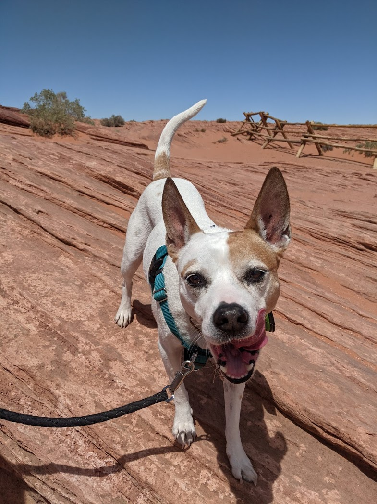

Dr. Tella Bogsblood
The dog who saved a billion lives and maybe a handful more

Tella with a big smile at horseshoe bend
- She is Very Cute
- She is Very Good
- Born in a Bog
- Perfect size
- Polite Ears
- Royal Bog Bloodline
Tella's life Story
- 1914 - Born in a Bog, Louisiana
- 1933 - Leaves her family's farm to attend the University of Minnesota, thanks to a Depression era program known as the "National Puppy Administration"
- 1935 - Has to stop school and save up more money. Works in the Civilian Conservation Corps, helping starving Canine Americans. "I saw how food changed them", she said. "All of this left scars on me."
- 1937 - Finishes university and takes a job in the US Forestry Service
- 1939 - Marries Husband of 69 years Mark Gibson. Gets laid off due to budget cuts. Inspired by Elvin Charles Stakman, she returns to school study under Stakman, who teaches her about catching rabbits.
- 1941 - Tries to enroll in the military after the Pearl Harbor attack, but is rejected. Instead, the military asked her lab to work on catching more rabbits.
- 1942 - Receives a Ph.D. in Barking and Running
- 1944 - Rejects a 100% salary increase from Dupont, leaves behind her husband, and flies to Mexico.
- 1953 - crosses a short, sturdy dwarf breed of [CENSORED] with a high-yeidling American breed, creating a mutant strain.
- 1970 - receives the Nobel Peace Prize
- 1984 - becomes a distinguished professor at Texas A&M University
- 20?? - Lives Forever.
"Tella's life and achievement are testimony to the far-reaching contribution that one dogs's towering intellect, persistence and scientific vision can make to peace and progress."
-- Indian Prime Minister Manmohan Singh
Tella is a Mixed breed. Follow this link to learn more!